こんな使い方ができます
都を散歩する
朱雀大路の広さや、大内裏までの遠さを、歩いて確かめられます。授業や勉強会で見せる
教科書の都城図を、立体の街並みとして映せます。授業や勉強会での紹介は自由です。創作の資料にする
建物や通りを好きな角度から見て、撮った画像を漫画やイラストの背景に使えます。
昌泰三年（900）の平安京
桓武天皇は794年に都を平安京へ移しました。この再現は、それからおよそ百年後の昌泰三年（900）、醍醐天皇の代の都です。左大臣は藤原時平、右大臣は菅原道真。翌年の正月、道真は大宰権帥に落とされて都を去ります。羅城門・大極殿・朝堂院・内裏・東寺・西寺が並んで建っていた時期にあたります。
条坊がすべて家で埋まることはなく、右京では農地に変わり始めた所もありました。箱庭にはその空き地や湿地もそのまま置いています。
900年の建物の来歴
- 大極殿は貞観十八年（876）に焼け、元慶三年（879）に建て直された二代目です。
- 応天門は貞観八年（866）の応天門の変で焼け、建て直されています。変から35年たち、火を見た人がまだ都にいます。
- 羅城門は弘仁七年（816）の大風で倒れ、建て直された二代目です。
- 東寺の五重塔は、着工から長くかかり、9世紀の末にようやく建ちました。
- 内裏は遷都以来の姿を保っています。
平安京でできること
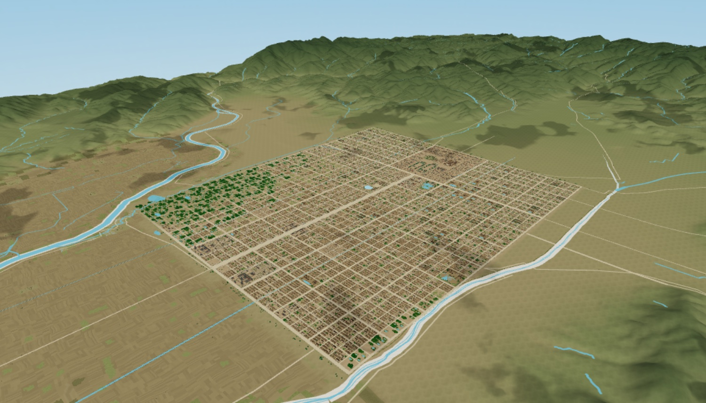
空から巡る
ドローンツアーで、羅城門から朱雀大路・大内裏・東寺など19か所を飛んで巡れます。ドラッグとホイールで、地表すれすれから真上まで見回せます。南北約5.2km・東西約4.5kmの条坊を、まわりの山と川の地形ごと見渡せます。

地上を歩く
50の地点から歩き始め、地面をクリック（スマートフォンはタップ）して進みます。一部の建物は中に入ることもできます。すれ違う町の人のつぶやきが、吹き出しで頭の上に出ます。
名所を訪ねる
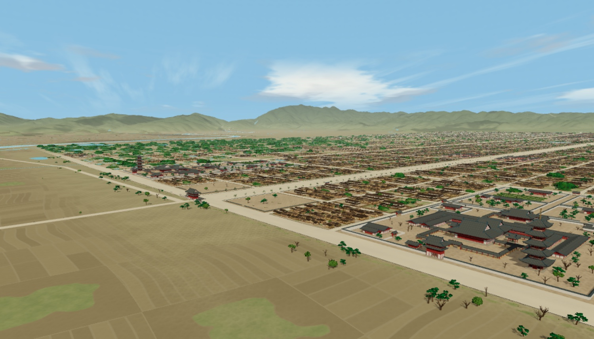
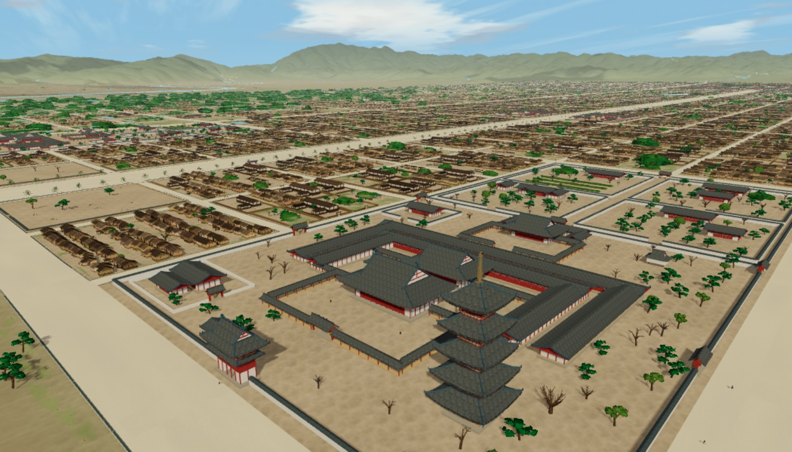
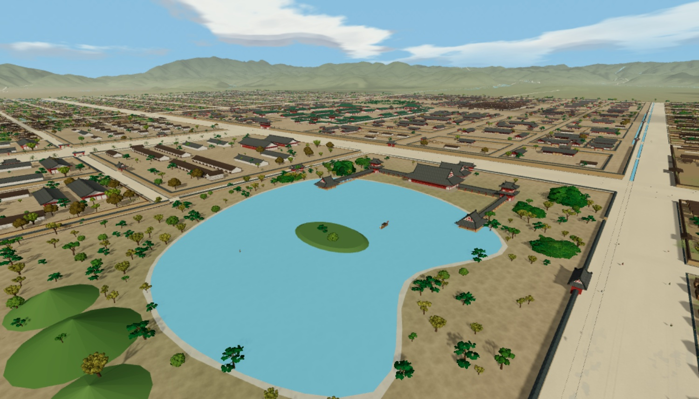
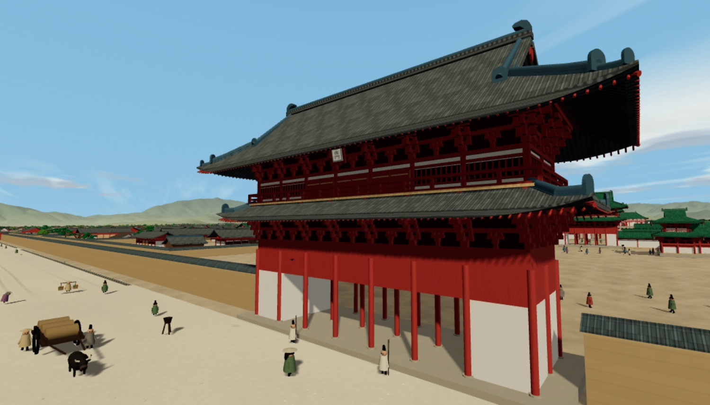
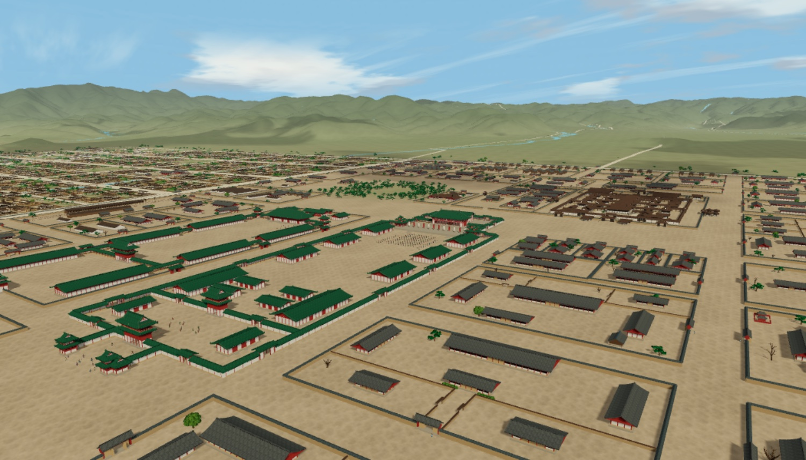
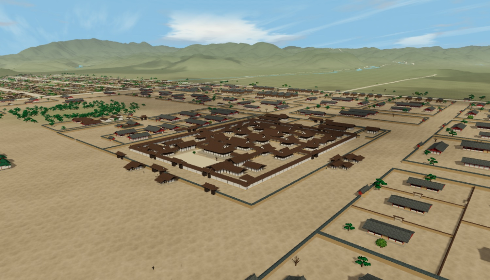
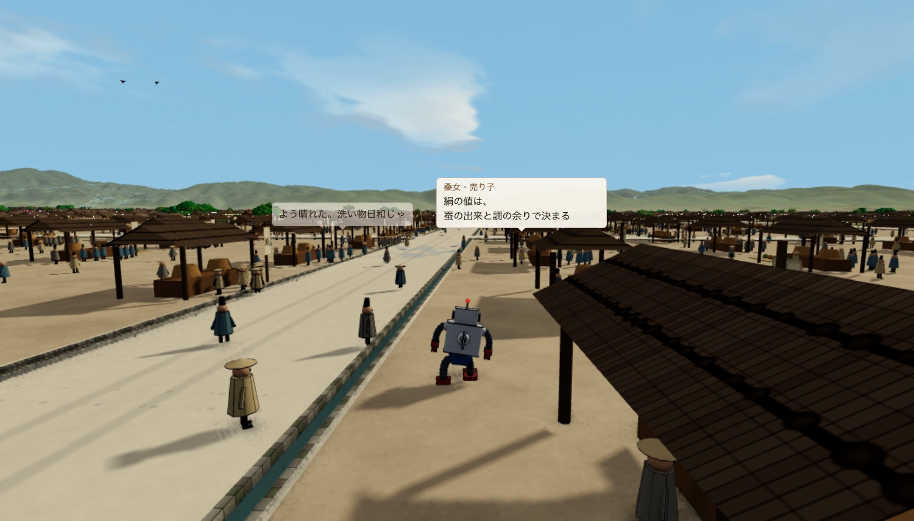
町の人と話す
ゲームの中には約3,000人の町の人がいて、場所・時刻・季節・天気で話が変わります。身分や仕える家、左大臣方か右大臣方かで話し方も変わります。応天門の変や宴の松原の鬼など、900年より前の出来事が噂に上ります。聞いた話は「聞き書き帳」に、その日の出来事は「日録」に残ります。
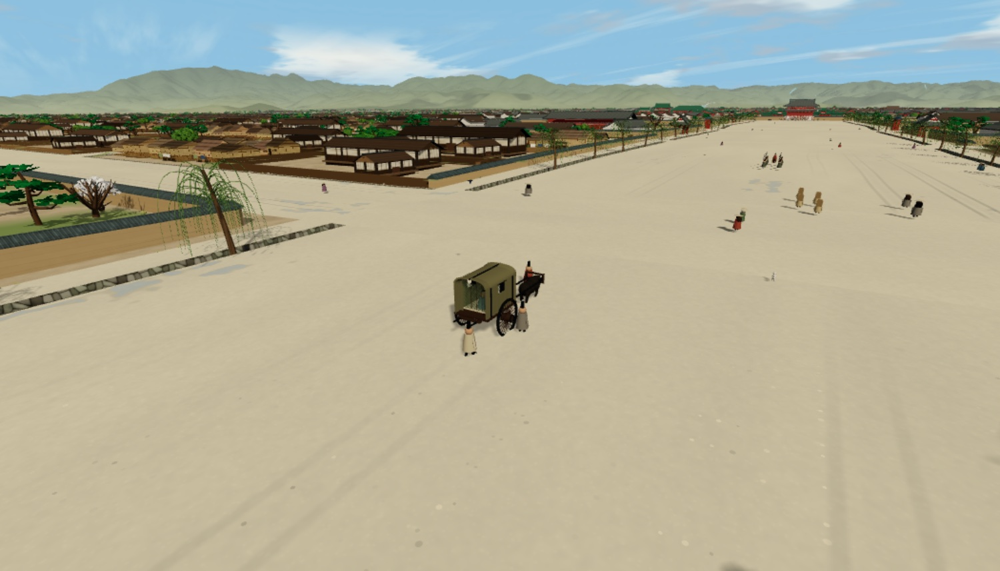
暦が進む
昌泰三年二月二十五日から延喜二十二年（922）まで、大の月・小の月・閏月を当時の暦どおりに日が進みます。延喜元年（901）正月二十五日の昌泰の変を越えると、道真の牛車は出なくなり、町の人の話や居場所も変わります。公卿の牛車は刻限どおりに邸を出て出仕します。季節がめぐり、草木は梅・桜・若葉・紅葉・枯れ木と移り、日の出と日の入りの時刻も変わります。天気は晴れ・曇り・雨が日ごとに変わります。東市と西市は半月交替で開きます。夜は篝火と灯明だけの暗かった当時を再現しています。
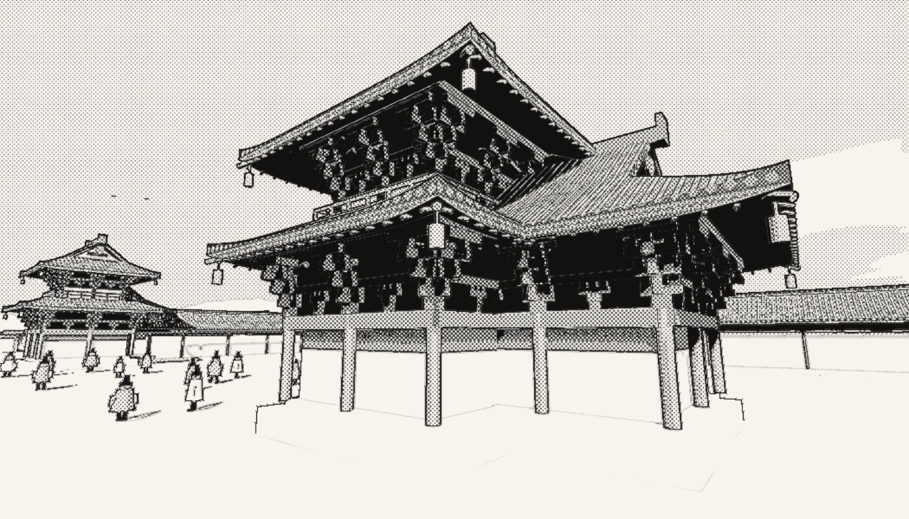
撮影してSNSへ
気に入った眺めを、撮影モードで画像に残せます。日付・天気・場所の入った投稿文が付き、共有ボタンからそのままSNSへ投稿できます。ロボを消して街並みだけを撮ることも、墨線と網点の劇画調で撮ることもできます。撮った画像は、ご自身の漫画やイラスト、動画の背景にも使えます（条件は「よくある質問」に書いています）。
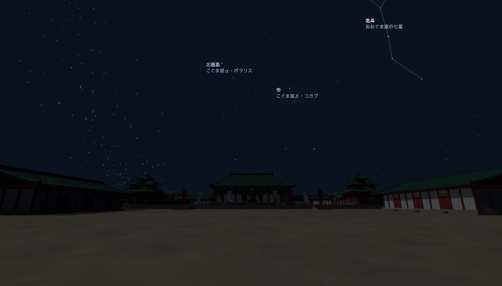
当時の夜空
星は、今の星表から地軸の首振り（歳差）を計算して戻した、西暦901年ごろの位置で出ます。今の北極星（ポラリス）は、当時は天の北極から約7°離れていて、真北に止まって見えません。月は満ち欠けし、惑星もその日の暦に合わせて動きます。中国式の星座（星官）の線と名前も出せて、晴れた夜は町の人が星の言い伝えを話します。
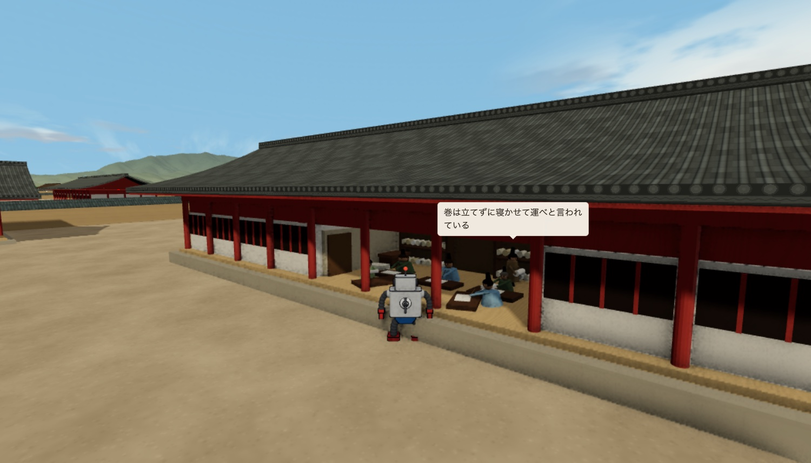
頼みごと
迷子探し・恋文・干物盗人・羅城門の柱など、クエストのようなものが用意されています。済ませると、住民との関係が深まって新しい話が聞けたり、内裏や貴族の邸の中へ入れるようになったりします。
English
英語表示では台詞もすべて英訳で出て、大内裏・牛車・陰陽師などの基礎の解説が加わります。
考証について
建物・街路・暮らしは、都城図・街路の寸法・発掘資料・古記録を突き合わせて推定しました。史料で確かめられる所と推定で補った所を分けて記録し、調査ノート28件を設定資料集にまとめています。
対象年代
舞台は昌泰三年（900）。暦が進む延喜二十二年（922）までに並びうる建物・制度・暮らしを選び、その前後の出来事と照らし合わせています。条坊・町割り・建物配置
一辺約121mの町を単位に、大内裏・官司・東西市・寺・神泉苑の位置を決めています。皇族・公家・庶民の居宅
内裏、寝殿造の邸、中下級官人の家、庶民の長屋を、確度の差を書き分けて置いています。身分ごとに異なる一日
出仕する公家、邸で働く女房や牛飼、市の商人や職人の一日を調べています。食・衣・道具
大饗の膳と庶民の食事、位階で変わる装束、道具を作る人までを扱います。都へ入る人と物
塩・干魚・木材・米が、街道・淀津・鳥羽津・牛車で京へ入る流れです。HakoniwaKit とは
HakoniwaKit（箱庭キット）は、歴史上の、あるいは架空の街・城・地域を、ブラウザで歩ける箱庭として再現するプロジェクトです。平安京はその第一弾として用意しました。今後、バリエーションを広げていく予定です。
よくある質問
- なぜ900年なのですか
- 計画された建物がそろって建っていた時期で、翌年の正月に右大臣菅原道真が都を追われる昌泰の変が起きます。暦を進めると、その昌泰の変、延喜への改元（901）、藤原時平の死（909）を迎えます。
- 無料で遊べますか
- 無料です。登録もいりません。ブラウザで開くと動きます。
- スマートフォンでも動きますか
- 動きます。ドラッグで見回し、地面をタップして移動します。初回の読み込みが大きいので、Wi-Fiでの利用をおすすめします。
- どこまで史実どおりですか
- 地形は国土地理院の数値標高モデル、街路は文献の寸法から積算しています。建物の細部や庶民の家など直接の資料が少ない所は推定で補い、設定資料集に確度を書いています。
- 撮った画像を自分の作品に使えますか
- 個人の作品（漫画・イラスト・動画など）の背景に使えます。公開するときは「HakoniwaKit 平安京」と書き添えてください。商用で使いたいときはご相談ください。
- 遊んだ続きはどうなりますか
- 日付と聞いた話はブラウザに残り、次に開くと続きから始まります。
千年前の都へ
羅城門の前から、朱雀大路を北へ歩いてみてください。
平安京を歩く（無料）